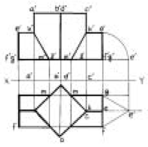
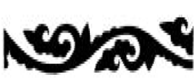
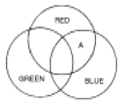
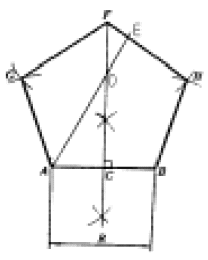
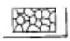
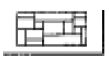
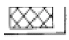
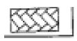

석공예기능사 (2005-07-17 기출문제)
1과목: 공예디자인
1. 투시도법에 관한 설명 중 잘못된 것은?
- 원근감이 있다.
- 시점에서 멀수록 작게 표현된다.
- 치수가 정확히 표현된다.
- 입체감이 있다.
(정답률: 알수없음)

2. 다음 중 신라 시대에 가장 발달하였던 공예는?
- 칠공예
- 목공예
- 도자기 공예
- 금속공예
(정답률: 알수없음)
3. 다음 중 형태변화의 조건과 가장 거리가 먼 것은?
- 보는 방향에 따라 달라진다.
- 명암에 따라 달라진다.
- 눈의 높이에 따라 달라진다.
- 원근에 따라 달라진다.
(정답률: 알수없음)
4. 다음 그림과 같은 투상도의 내용은?

- 정사각 기둥의 투상을 나타낸 것이다.
- 사각형을 기울어지게 절단한 것이다.
- 정삼각 기둥과 정사각 기둥의 상관체의 투상이다.
- 정사각형의 단면을 나타낸 투상이다.
(정답률: 알수없음)
5. 색의 감정적 효과에서 중량감에 가장 큰 영향을 미치는 것은?
- 채도
- 명도
- 색상
- 대비
(정답률: 알수없음)
6. 신예술을 의미하는 뜻으로 덩쿨이나 나무잎을 연상하는 유동적 선에 의해 환상적 구도를 시도한 예술은?
- 쎄쎄션(Sezession)
- 아트 앤드 크라프트(Art and crafts)
- 아르누보(Art Nouveau)
- 바우하우스(Bauhause)
(정답률: 알수없음)
7. 다음 그림과 같은 문양은?

- 국당초
- 모란당초
- 연당초
- 인동당초
(정답률: 알수없음)
8. 빨간 쟁반 위에 놓인 귤(Orange)이 녹색(Green)기를 띄어 보이는 현상은?
- 채도대비
- 면적대비
- 색상대비
- 보색대비
(정답률: 알수없음)
9. 지시선을 사용하지 않는 곳은?
- 가공법
- 반지름
- 구멍의 치수
- 부품번호
(정답률: 알수없음)
10. 다음 색광혼합의 그림에서 A부분의 색은?

- White
- Cyan
- Yellow
- Magenta
(정답률: 알수없음)
11. 병치혼합에 관한 설명 중 올바른 것은?
- 색을 인접시키고 떨어져서 보는 것으로 평균 명도의 중간색을 얻는 혼합이다.
- 색팽이를 회전시켜 색의 평균명도를 얻는 혼합이다.
- 색유리를 통한 스크린의 혼합이다.
- 색상환에서 반대색끼리의 혼합이다.
(정답률: 알수없음)
12. 해칭선은 어떤 선을 사용하는가?
- 굵은 실선
- 가는 실선
- 가는 일점쇄선
- 굵은 일점쇄선
(정답률: 알수없음)
13. 주어진 길이(R)를 1변으로 하는 정5각형 작도에서 길이DE를 옳게 나타낸 것은 ?

- DE = (1/2)AB
- DE = AB
- DE = (1/2)AD
- DE = AD
(정답률: 알수없음)
14. 다음 도면의 종류 중 용도에 따른 분류가 아닌 것은?
- 계획도
- 조립도
- 설명도
- 주문도
(정답률: 알수없음)
15. 구성의 요소가 규칙적으로 점점 변화해 가는 상태 즉, 계측적인 변화로서 요소의 증대, 혹은 감소의 두 방향성을 가지는 리듬은?
- 점증의 리듬
- 기하학적 리듬
- 되풀이 리듬
- 자유로운 리듬
(정답률: 알수없음)
16. 황금분할비례의 설명으로 틀린 것은?
- 길이의 비가 1 : 1.816 이다.
- 종교적인 신비로운 미의 법칙
- 통일과 변화를 얻을 수 있는 구성원리
- 조각, 건축조형에 응용된다.
(정답률: 알수없음)
17. 다음 중에서 가장 맑고 깨끗한 색은?
- 탁색
- 원색
- 암색
- 명색
(정답률: 알수없음)
18. 다음 설명 중 등각 투상법은?
- 투상면에 대해 기울어진 평행광선에 의해서 투상하여 입체적인 물체를 나타내는 것이다.
- 물체를 본 시선이 화면과 만나는 각 점을 연결하여 실제 모양과 같게 그리는 것이다.
- 인접한 두 면이 각각 화면과 기면에 평행한 그림을 말한다.
- 정면, 평면, 측면을 하나의 투상면 위에서 동시에 볼 수 있도록 그린 것이다.
(정답률: 알수없음)
19. 다음에서 유사색 조화를 이루고 있는 것은?
- 빨강, 파랑
- 감청, 주황
- 연두, 녹색
- 노랑, 남색
(정답률: 알수없음)
20. 다음 중 극단적으로 어느 한 쪽에 치우칠 때 단조롭고 무미건조하거나, 또는 혼란과 무질서를 초래하게 되는 디자인 원리는?
- 대칭과 비대칭
- 주도와 종속
- 통일과 변화
- 비례와 대비
(정답률: 알수없음)
2과목: 석공예재료
21. 다음 배색 중 명시도가 가장 높은 배색은?
- 녹색 바탕에 흰색
- 흰색 바탕에 검정색
- 검정 바탕에 노랑색
- 검정 바탕에 흰색
(정답률: 알수없음)
22. 산업안전표시 가운데 안전위생지도 표지판을 제작할 때 여기에 칠하는 적당한 색은 ?
- 흰색 바탕에 녹색
- 녹색 바탕에 노랑
- 노랑 바탕에 검정
- 흰색 바탕에 빨강
(정답률: 알수없음)
23. 석재의 오물을 제거 하는 방법 중에서 건식방법이 아닌 것은?
- 붕산나트륨에 의하여 제거하는 방법
- 압축공기를 이용하여 불어내는 방법
- 샌드블라스팅(sand blasting) 세척방법
- 연장으로 표면을 곱게 다듬는 방법
(정답률: 알수없음)
24. 수성암의 용도는?
- 강도나 내구성이 강하며 대체로 구조재로 사용된다.
- 강도나 내구성이 부족하며 대체로 장식재로 사용된다.
- 강도나 내구성이 약하며 대체로 구조재로 사용된다.
- 재질이 강하며 견치석으로 많이 이용된다.
(정답률: 알수없음)
25. 연마재로 사용되는 카보런덤의 화학성분은?
- SiC
- Al2O3
- MgO
- CaO
(정답률: 알수없음)
26. 석재를 구조재로 사용할 때의 유의 사항은?
- 인장력을 받도록 한다.
- 압축력을 받도록 한다.
- 전단력을 받도록 한다.
- 곡력을 받게 한다.
(정답률: 알수없음)
27. 다음 중 지붕용 슬레이트, 벼룻돌, 숫돌 등으로 쓰이는 암석은?
- 화강암
- 점판암
- 반려암
- 섬록암
(정답률: 알수없음)
28. 장석이 화학적 풍화작용을 받으면 어떻게 되는가?
- 고령토가 생긴다.
- 석고가 생긴다.
- 구리의 광물이 생긴다.
- 철광석의 광물이 생긴다.
(정답률: 알수없음)
29. 석재에서 풍화작용을 더욱 촉진시키는 직접요인은?
- 이산화탄소
- 지질구조
- 대기중의 수분 및 가스성분
- 광물조성과 조직
(정답률: 알수없음)
30. 다음에서 유기적 퇴적암에 해당되는 것은 ?
- 석고
- 암염
- 규조토
- 칠레초석
(정답률: 알수없음)
31. 산과 열에는 약하나 치밀견고하고 물갈기를 하면 아름다운 색채와 무늬가 있어 실내 장식재와 조각재로 가장 좋은 재료는?
- 사문암
- 대리석
- 화강암
- 안산암
(정답률: 알수없음)
32. 암석을 물리적인 성질에 따라 경석, 연석, 준경석으로 분류하는 기준은?
- 흡수율
- 겉보기비중
- 압축강도
- 전단강도
(정답률: 알수없음)
33. 다음의 화성암 중에서 심성암에 해당되는 것은?
- 화강암
- 유문암
- 안산반암
- 현무암
(정답률: 알수없음)
34. 돌쌓기공법 중 외관상 허튼 줄눈쌓기를 표현한 것은?




(정답률: 알수없음)
35. 치밀하며 반점이 없는 검은 화산암이며, 석영(SiO2)을 적게 포함하여 쉽게 유동하여 굳어져서 용암표면에 특수한 유동구조를 보인다. 우리나라에서는 제주도, 울릉도, 백두산, 한탄강에 분포하는 이 암석은?
- 현무암
- 유문암
- 섬록암
- 흑요암
(정답률: 알수없음)
36. 주로 묘비석 및 석재에 글씨를 새기는 작업을 하는데 사용하는 특수 에어 가공기계는?
- 와이어소
- 샌드블라스터
- 부쉬헤머링
- 성형가공기
(정답률: 알수없음)
37. 변성암에서 나타나는 조직으로 옳은 것은?
- 쇄설성 조직
- 현정질 조직
- 재결정 조직
- 유리질 조직
(정답률: 알수없음)
38. 다음 암석 중 염기성암이며 화산암에 해당되는 것은?
- 섬록암
- 반려암
- 석영반암
- 현무암
(정답률: 알수없음)
39. 석재를 잘 보존하는 방법은?
- 페인트를 칠한다.
- 건성유를 칠한다.
- 가리(加里)비누 8% 수용액을 바르고 명반수 5%를 칠한다.
- 테르핀(telpin)유 ½에 백납(白蠟)을 가열 용해시킨 액을 칠한다.
(정답률: 알수없음)
40. 석재의 내화성에 대한 피해는?
- 성분이 용해된다.
- 조직이 치밀해진다.
- 내부에 압력이 없어진다.
- 화학적인 힘에 의해 강도가 높아진다.
(정답률: 알수없음)
3과목: 석공예
41. 기준면을 잡는데 필요하지 않은 것은?
- 사포
- 수평기
- 먹줄
- 곡자
(정답률: 알수없음)
42. 다음 보호구 중 위생보호구에 속하는 것은?
- 안전모
- 장갑
- 방진마스크
- 안전화
(정답률: 알수없음)
43. 길이, 내경, 외경, 깊이 등을 측정할 수 있는 공구는?
- 스프링 캘리퍼스
- 버어니어 캘리퍼스
- 하이트 게이지
- 서어피스 게이지
(정답률: 알수없음)
44. 등을 구부려 무거운 물건을 들어 올릴 때 인체에 미칠 수 있는 사항이 아닌 것은?
- 등 근육이 과로한다.
- 척추, 연골이 이골 된다.
- 탈장이 된다.
- 등근육에 적당한 운동이 된다.
(정답률: 알수없음)
45. 작업복의 기능적 성격은?
- 편의성이다.
- 모양이다.
- 색상이다.
- 재료이다.
(정답률: 알수없음)
46. 돌 작업 중 연필 대용으로 이용되는 것은?
- 크레용
- 파스텔
- 먹과 먹자
- 분필
(정답률: 알수없음)
47. 십장생문이란?
- 해, 구름, 달, 대나무, 물, 거북, 불로초, 사슴, 학, 돌
- 해, 국화, 소나무, 물, 거북, 불로초, 사슴, 학, 대나무, 구름
- 해, 구름, 물, 거북, 난초, 대나무, 불로초, 사슴, 학, 산
- 해, 산, 물, 돌, 구름, 소나무, 불로초, 거북, 사슴 ,학
(정답률: 알수없음)
48. 석재의 연마 작업 후 광내기 작업에서 마지막 공정은?
- 금강석(金鋼石)작업
- 왁스(Wax) 작업
- 백납(白蠟) 작업
- 샌드페이퍼 #150작업
(정답률: 알수없음)
49. 초벌 연마용으로 알맞은 샌드페이퍼는?
- # 150 - 180
- # 200 - 300
- # 350 - 400
- # 450 - 500
(정답률: 알수없음)
50. 다이아몬드 톱을 사용하여 원석을 재단할 때 직접적인 영향이 없는 것은?
- 원석의 정치 및 균형
- 톱날의 회전방향
- 톱날의 절삭깊이
- 톱날의 회전속도
(정답률: 알수없음)
51. 정작업을 할 때 강하게 정을 때려서는 안될 경우는?
- 작업의 처음과 끝
- 작업의 중간과 끝
- 작업의 처음과 중간
- 작업의 전체에 걸쳐서
(정답률: 알수없음)
52. 비신은 없어졌으나 귀부와 이수가 남아있는 무열왕능비는 어느 시대 석조각 작품인가?
- 백제
- 고신라
- 통일신라
- 고려
(정답률: 알수없음)
53. 대리석을 이용하여 곱게 다듬은 화분대를 제작하기 위한 올바른 작업순서는?
- 도드락다듬 - 잔다듬 - 정다듬 - 연삭
- 채석 - 잔다듬 - 도드락다듬 - 혹두기
- 혹두기 - 정다듬 - 도드락다듬 - 잔다듬
- 연삭 - 도드락다듬 - 정다듬 - 혹두기
(정답률: 알수없음)
54. 연마용 그라인더 저석의 규격이 아닌 것은?
- 2인치
- 4인치
- 6인치
- 7인치
(정답률: 알수없음)
55. 다음 중 잔다듬의 방법이 아닌 것은?
- 항상 태양광선이나 밝은 쪽을 보면서 찍는다.
- 날의 간격이 고르고 일정해야 한다.
- 손목의 스냅을 이용하며 힘들이지 않고 작업한다.
- 자루를 짧게 잡고 허리를 숙여서 작업한다.
(정답률: 알수없음)
56. 다음 중 가장 큰 원을 그릴 수 있는 것은?
- 스프링 컴퍼스
- 디바이더
- 원형 템플릿
- 빔 컴퍼스
(정답률: 알수없음)
57. 와이어 로우프로 중량물을 달아 올릴 때 로우프에 가장 적게 힘이 걸리는 로우프의 각도는?
- 30°
- 60°
- 90°
- 120°
(정답률: 알수없음)
58. 다이아몬드(Diamond) 톱을 사용한 작업의 장점이 아닌 것은?
- 폭이 넓은 판재일수록 더 절단이 용이하다.
- 표면 상태가 양호하여 연마에 효율이 높다.
- 절단물의 형태에 제한을 많이 받지 않는다.
- 시간당 절삭능률이 갱소보다 높다.
(정답률: 알수없음)
59. 석재의 표면이나 측면에 생긴 미세한 균열을 확인하는 방법은?
- 불로 튀겨본다.
- 고운 정다듬을 해본다.
- 카보런덤 공구 #60으로 갈아본다.
- 물을 뿌려본다.
(정답률: 알수없음)
60. 석공예 작업장의 환경은 어떻게 하여야 가장 좋은가?
- 통풍이 잘되며 빛이 잘 들어와야 한다.
- 석재 가루가 날리지 않도록 밀폐된 공간이 좋다.
- 시멘트 바닥과 같은 견고한 곳이 좋다.
- 마루 바닥과 같이 탄력이 있는 장소가 좋다.
(정답률: 알수없음)
투시도법은 시각적으로 입체감을 표현하기 위한 기법으로, 원근감과 입체감을 표현할 수 있습니다. 시점에서 멀어질수록 작게 표현되는 것은 원근감을 나타내는 것이며, 입체감은 물체의 형태와 구조를 표현하는 것입니다.
하지만 투시도법은 실제 물체의 크기와 비율을 완벽하게 표현하지는 않습니다. 따라서 치수가 정확히 표현되지는 않습니다.